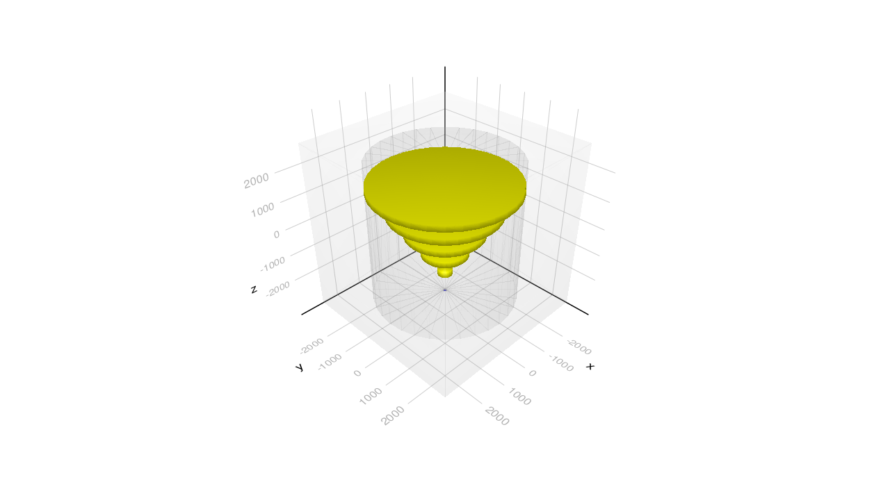

Basic/B2a Example
It is equivalent to the B2a example in Geant4 but re-written with a new more Julia friendly interface. The core of the example is to create an instance of the type G4JLApplication with all the essential elements defined (detector and geometry, physics list, primary particles generator, actions, simulated data being accumulated, mapping of logical volumes to sensitive detectors, etc.)
Import the Geant4 and Geant4.SystemOfUnits modules
using Geant4
using Geant4.SystemOfUnits
using Printf, GeometryBasicsDefine the Detector Parameters and Geometry
We include a file to define de structure B2aDetector and the construction method B2aConstruct to make the notebook more manageable
include(joinpath(@__DIR__, "DetectorB2a.jl"))Define TrackerHit structure
struct TrackerHit
trackID::Int32
chamberNb::Int32
edep::Float64
pos::Point3{Float64}
end
function Base.show(io::IO, hit::TrackerHit)
(;trackID, chamberNb, edep, pos) = hit
@printf(io, "\ntrackID: %3d chamberNb: %2d Edep: %.3f MeV Position: (%3f, %3f, %3f)", trackID, chamberNb, edep/MeV, pos...)
endDefine Sensitive Detector for the chambers
It implies to define a data structure where to accumulate the TrackerHits for each event, and the callback functions:
intilializecalled at the beginning of each eventendOfEventcalled at the end of the eventprocessHitcalled for each hit (step ending in the associated logical volume) to be processed
all of the callback functions get the declared data structure as first argument
#---SD collected data------------------------------------------------------------------------------
struct B2aSDData <: G4JLSDData
trackerHits::Vector{TrackerHit}
B2aSDData() = new([])
end
#---Initialize method------------------------------------------------------------------------------
function _initialize(data::B2aSDData, ::G4HCofThisEvent)::Nothing
empty!(data.trackerHits)
return
end
#---End of Event method----------------------------------------------------------------------------
function _endOfEvent(data::B2aSDData, ::G4HCofThisEvent)::Nothing
return
end
#---Process Hit method-----------------------------------------------------------------------------
function _processHits(data::B2aSDData, step::G4Step, ::G4TouchableHistory)::Bool
edep = step |> GetTotalEnergyDeposit
edep < 0. && return false
pos = step |> GetPostStepPoint |> GetPosition
push!(data.trackerHits, TrackerHit(step |> GetTrack |> GetTrackID,
step |> GetPreStepPoint |> GetTouchable |> GetCopyNumber,
edep,
Point3{Float64}(x(pos),y(pos),z(pos))))
return true
end_processHits (generic function with 1 method)And create a specialized instance of G4JLSensitiveDetector
#---Create SD instance-----------------------------------------------------------------------------
chamber_SD = G4JLSensitiveDetector("Chamber_SD", B2aSDData(); # SD name an associated data are mandatory
processhits_method=_processHits, # process hist method (also mandatory)
initialize_method=_initialize, # intialize method
endofevent_method=_endOfEvent); # end of event method
Define an End Event Action
This is collect all results each event. Only printing at this time.
#---End Event Action-------------------------------------------------------------------------------
function endeventaction(evt::G4Event, app::G4JLApplication)
hits = getSDdata(app, "Chamber_SD").trackerHits
eventID = evt |> GetEventID
if eventID < 10 || eventID % 100 == 0
G4JL_println("Event: $eventID with $(length(hits)) hits stored in this event")
end
return
endendeventaction (generic function with 1 method)Define the primary particle generator (Particle Gun)
particlegun = G4JLGunGenerator(particle = "proton",
energy = 3GeV,
direction = G4ThreeVector(0,0,1),
position = G4ThreeVector(0,0,-2940.0))G4JLGunGenerator("ParticleGun", Geant4.G4JLParticleGunData(nothing, "proton", Geant4.CLHEP!Hep3VectorAllocated(Ptr{Nothing} @0x00000000039dfbc0), Geant4.CLHEP!Hep3VectorAllocated(Ptr{Nothing} @0x00000000032380b0), 3000.0), Geant4.var"#init#24"(), Geant4.var"#gen#25"(), G4JLGeneratorAction[])Instantiate a G4JLApplication with all the elements
The G4RunManager is created at this moment
#---Create the Application-------------------------------------------------------------------------
app = G4JLApplication( detector = B2aDetector(nChambers=5), # detector with parameters
generator = particlegun, # primary particle generator
nthreads = 4, # number of threads (MT)
physics_type = FTFP_BERT, # what physics list to instantiate
endeventaction_method = endeventaction, # end event action
sdetectors = ["Chamber_LV+" => chamber_SD] # mapping of LVs to SDs (+ means multiple LVs with same name)
); **************************************************************
Geant4 version Name: geant4-11-01-patch-01 [MT] (10-February-2023)
<< in Multi-threaded mode >>
Copyright : Geant4 Collaboration
References : NIM A 506 (2003), 250-303
: IEEE-TNS 53 (2006), 270-278
: NIM A 835 (2016), 186-225
WWW : http://geant4.org/
**************************************************************Final steps
Configure the application, initialize the run and fire the beam for 0 events to finalize all initializations
configure(app)initialize(app)Checking overlaps for volume Target:0 (G4Tubs) ... OK!
Checking overlaps for volume Tracker:0 (G4Tubs) ... OK!
Checking overlaps for volume Chamber_PV:1 (G4Tubs) ... OK!
Checking overlaps for volume Chamber_PV:2 (G4Tubs) ... OK!
Checking overlaps for volume Chamber_PV:3 (G4Tubs) ... OK!
Checking overlaps for volume Chamber_PV:4 (G4Tubs) ... OK!
Checking overlaps for volume Chamber_PV:5 (G4Tubs) ... OK!beamOn(app, 0)#---G4Visualization is not yet a registered module------------------------------------------
try
using G4Visualization
catch e
using Pkg
Pkg.develop(path = joinpath(dirname(pathof(Geant4)),"../G4Visualization"))
using G4Visualization
end
#---Using the CairoMakie backend (static)
using CairoMakie
world = GetWorldVolume()
draw(world)[32m[1m Resolving[22m[39m package versions...
[32m[1m Installed[22m[39m RealDot ──────────── v0.1.0
[32m[1m Installed[22m[39m MsgPack ──────────── v1.2.0
[32m[1m Installed[22m[39m ModernGL ─────────── v1.1.7
[32m[1m Installed[22m[39m Hyperscript ──────── v0.0.4
[32m[1m Installed[22m[39m GLMakie ──────────── v0.8.5
[32m[1m Installed[22m[39m Deno_jll ─────────── v1.33.4+0
[32m[1m Installed[22m[39m WGLMakie ─────────── v0.8.9
[32m[1m Installed[22m[39m ShaderAbstractions ─ v0.3.0
[32m[1m Installed[22m[39m Rotations ────────── v1.5.1
[32m[1m Installed[22m[39m GLFW ─────────────── v3.4.1
[32m[1m Installed[22m[39m Quaternions ──────── v0.7.4
[32m[1m Installed[22m[39m MeshIO ───────────── v0.4.10
[32m[1m Installed[22m[39m JSServe ──────────── v2.2.6
[32m[1m Installed[22m[39m WidgetsBase ──────── v0.1.4
[32m[1m Installed[22m[39m ThreadPools ──────── v2.1.1
[32m[1m Updating[22m[39m `~/work/Geant4.jl/Geant4.jl/docs/Project.toml`
[90m[b48468f4] [39m[92m+ G4Visualization v0.1.0 `~/work/Geant4.jl/Geant4.jl/G4Visualization`[39m
[32m[1m Updating[22m[39m `~/work/Geant4.jl/Geant4.jl/docs/Manifest.toml`
[90m[b48468f4] [39m[92m+ G4Visualization v0.1.0 `~/work/Geant4.jl/Geant4.jl/G4Visualization`[39m
[90m[f7f18e0c] [39m[92m+ GLFW v3.4.1[39m
[90m[e9467ef8] [39m[92m+ GLMakie v0.8.5[39m
[90m[47d2ed2b] [39m[92m+ Hyperscript v0.0.4[39m
[90m[824d6782] [39m[92m+ JSServe v2.2.6[39m
[90m[7269a6da] [39m[92m+ MeshIO v0.4.10[39m
[90m[66fc600b] [39m[92m+ ModernGL v1.1.7[39m
[90m[99f44e22] [39m[92m+ MsgPack v1.2.0[39m
[90m[94ee1d12] [39m[92m+ Quaternions v0.7.4[39m
[90m[c1ae055f] [39m[92m+ RealDot v0.1.0[39m
[90m[6038ab10] [39m[92m+ Rotations v1.5.1[39m
[90m[65257c39] [39m[92m+ ShaderAbstractions v0.3.0[39m
[90m[b189fb0b] [39m[92m+ ThreadPools v2.1.1[39m
[90m[276b4fcb] [39m[92m+ WGLMakie v0.8.9[39m
[90m[eead4739] [39m[92m+ WidgetsBase v0.1.4[39m
[90m[04572ae6] [39m[92m+ Deno_jll v1.33.4+0[39m
[32m[1m Building[22m[39m ModernGL → `~/.julia/scratchspaces/44cfe95a-1eb2-52ea-b672-e2afdf69b78f/b76ea40b5c0f45790ae09492712dd326208c28b2/build.log`
[36m[1m[ [22m[39m[36m[1mInfo: [22m[39mPrecompiling G4Visualization [b48468f4-0410-448b-8f39-7a15160176d0]
CairoMakie.Screen{IMAGE}beamOn(app,10)G4WT0 > Event: 1 with 131 hits stored in this event
G4WT0 > Event: 4 with 84 hits stored in this event
G4WT1 > Event: 3 with 75 hits stored in this event
G4WT0 > Event: 5 with 77 hits stored in this event
G4WT0 > Event: 7 with 76 hits stored in this event
G4WT0 > Event: 8 with 75 hits stored in this event
G4WT0 > Event: 9 with 135 hits stored in this event
G4WT2 > Event: 0 with 105 hits stored in this event
G4WT3 > Event: 2 with 70 hits stored in this event
G4WT1 > Event: 6 with 319 hits stored in this event@time beamOn(app,1000)G4WT1 > Event: 0 with 57 hits stored in this event
G4WT1 > Event: 1 with 202 hits stored in this event
G4WT1 > Event: 2 with 55 hits stored in this event
G4WT1 > Event: 3 with 128 hits stored in this event
G4WT1 > Event: 4 with 15 hits stored in this event
G4WT1 > Event: 5 with 205 hits stored in this event
G4WT1 > Event: 6 with 224 hits stored in this event
G4WT1 > Event: 7 with 124 hits stored in this event
G4WT1 > Event: 8 with 213 hits stored in this event
G4WT1 > Event: 9 with 50 hits stored in this event
G4WT3 > Event: 100 with 93 hits stored in this event
G4WT2 > Event: 200 with 89 hits stored in this event
G4WT2 > Event: 300 with 113 hits stored in this event
G4WT3 > Event: 400 with 60 hits stored in this event
G4WT1 > Event: 500 with 71 hits stored in this event
G4WT0 > Event: 600 with 64 hits stored in this event
G4WT1 > Event: 700 with 98 hits stored in this event
G4WT0 > Event: 800 with 167 hits stored in this event
G4WT1 > Event: 900 with 79 hits stored in this event
1.057966 seconds (533.33 k allocations: 12.674 MiB)SetParticleEnergy(particlegun, 500MeV)@time beamOn(app,1000)G4WT3 > Event: 0 with 139 hits stored in this event
G4WT3 > Event: 1 with 107 hits stored in this event
G4WT3 > Event: 2 with 160 hits stored in this event
G4WT3 > Event: 3 with 18 hits stored in this event
G4WT3 > Event: 4 with 359 hits stored in this event
G4WT3 > Event: 5 with 149 hits stored in this event
G4WT3 > Event: 6 with 193 hits stored in this event
G4WT3 > Event: 7 with 159 hits stored in this event
G4WT3 > Event: 8 with 179 hits stored in this event
G4WT3 > Event: 9 with 105 hits stored in this event
G4WT0 > Event: 100 with 300 hits stored in this event
G4WT1 > Event: 200 with 188 hits stored in this event
G4WT1 > Event: 300 with 240 hits stored in this event
G4WT1 > Event: 400 with 150 hits stored in this event
G4WT3 > Event: 500 with 245 hits stored in this event
G4WT1 > Event: 600 with 196 hits stored in this event
G4WT0 > Event: 700 with 190 hits stored in this event
G4WT2 > Event: 800 with 123 hits stored in this event
G4WT2 > Event: 900 with 188 hits stored in this event
0.674015 seconds (520.12 k allocations: 8.429 MiB)